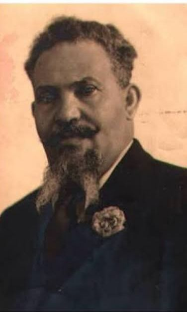
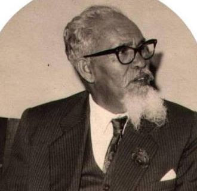
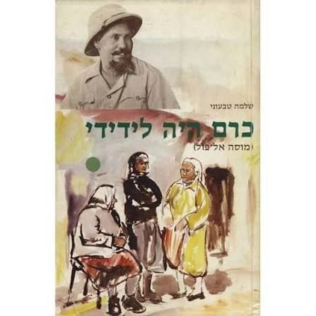
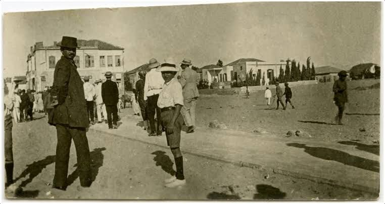
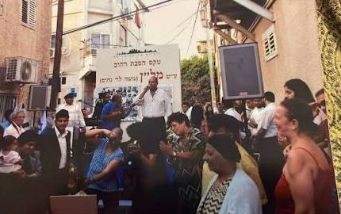

עבודת שורשים
משה לוי נחום, מייסד הדפוס בכרם התימנים

בחרתי לחקור את ״דפוס מל״ן״ ואת הסיפור של משה לוי נחום, סבא של סבא שלי (סבא רבא של אבא שלי), שהקים את העסק.
הדפוס כבר לא פעיל היום, אבל רציתי להבין איך הוא בנה הכול מאפס, מה היה מיוחד בדפוס שלו ואיך הצליח להחזיק מעמד כל כך הרבה שנים. בשבילי זו הזדמנות ללמוד את הסיפור המשפחתי ואת המורשת שהוא השאיר אחריו.

״מל״ן״ הם ראשי התיבות של שמו המלא:
הוא עמד מתחת לחלון הישיבה, מכר פול חם, והקשיב לשיעורים.
בצעירותו משה התפרנס ממכירת פול חם לתלמידי ישיבת הרב קוק בתל אביב. לא היה לו כסף ללימודים, אז הוא עמד עם העגלה מתחת לחלון, הקשיב לשיעורים תוך כדי עבודה, וכך רכש את השכלתו.

משה הרגיש שלבני עדות המזרח בכלל, ולעדה התימנית בפרט, אין איפה להשמיע את קולם בתקשורת של אותם ימים. הוא רצה ליצור מקום שיענה על הצרכים המיוחדים של הקהילה.
הוא ראה בדפוס כלי לצמצום הפערים החברתיים ולמניעת תחושת הקיפוח שחוו רבים מבני עדתו.
הוא האמין שהדפסת עיתון (כמו ״המזרח״), כרוזים וספרים תעזור לבני העדה להתפתח, לצאת מהסגירות העדתית ולהשתלב טוב יותר בחברה.

משה הדפיס כרוזים לקהילה ולמחתרות. כתבו כותרת, בחרו צבעים והדפיסו אותה כמו בדפוס מל״ן.
המיקום: רחוב הלל הזקן 6, תל אביב.
בית הדפוס נסגר בשנת 2003, אחרי 67 שנות פעילות, כשהבניין שבו שכן נהרס.
באותה שנה החליטה עיריית תל אביב-יפו להנציח את משה ושינתה את שמו של רחוב ״הפדויים״ הסמוך לרחוב ״מל״ן״.

הילדים של משה. כולם עבדו בבית הדפוס בתפקידים שונים, כמו סדרים ודפסים. אחרי שמשה הלך לעולמו העסק עבר לידיהם, והם המשיכו להפעיל אותו עד הסגירה והריסת הבניין בשנת 2003. בסך הכול הדפוס פעל כ-67 שנה כעסק משפחתי.
חקרתי את תולדות חייו של משה לוי נחום (מל״ן). אספתי חומרים מהמשפחה וארגנתי אותם לסיפור שמתחיל בתימן ומסתיים בבית דפוס בתל אביב.
היה מאתגר לזקק את כל המידע, אבל התרגשתי לגלות דמות של מנהיג שבנה את עצמו מאפס.
הכינוי ״מוסא אל-פול״: משה שמכר פול מתחת לחלון הישיבה כדי ללמוד תורה בחינם. זה שיעור טוב בחריצות.
גיליתי שהשורשים שלי נטועים בהקמת תל אביב ובהנהגת העדה התימנית, ושבית הדפוס המשפחתי שירת את המחתרות ואת המדינה שבדרך.